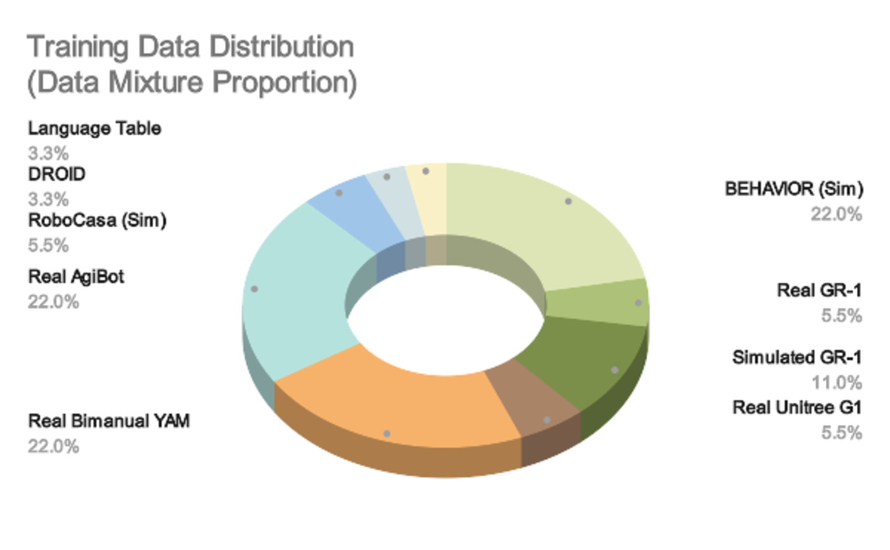

GR00T N1.6
A larger Cosmos-based VLA for cross-embodiment manipulation and locomotion.
GR00T N1.6은 N1.5의 VLM + diffusion transformer 정책을 더 큰 DiT와 Cosmos 기반 VLM으로 확장한 모델이다. 목표는 tabletop manipulation을 넘어 양팔 조작과 Unitree G1의 whole-body loco-manipulation까지, 더 다양한 embodiment에서 post-training 성능을 높이는 것이다.
What changed?
N1.5보다 더 큰 action policy, 더 유연한 시각 입력
Cosmos-2B 계열 VLM
N1.6은 NVIDIA 내부 Cosmos-2B VLM variant를 사용한다. 이미지를 정사각형으로 padding하지 않고 native aspect ratio와 flexible resolution으로 처리하며, 일반 vision-language 과제와 next-action prediction 같은 embodied reasoning을 함께 학습한 backbone이다.
DiT를 16층에서 32층으로 확대
N1.5의 DiT보다 두 배 깊은 32-layer DiT를 사용한다. VLM이 현재 장면과 지시의 표현을 만들면, 큰 action policy가 이를 조건으로 연속 action chunk를 flow matching으로 생성한다.
고정 VLM 대신 상위 4개 층만 unfreeze
N1.5의 post-VLM 4-layer transformer adapter를 제거하고, pre-training 중 VLM 최상위 4개 층을 열어 둔다. 전체 VLM을 크게 바꾸지 않으면서 로봇 데이터에 맞는 표현을 조정하는 방식이다.
Action Space
절대 목표값보다 state-relative action을 기본으로
N1.6은 대부분의 embodiment에서 absolute joint angle이나 absolute end-effector pose 대신, 현재 state를 기준으로 한 relative action chunk를 예측한다. 예를 들어 “관절을 1.2 rad로 맞춰라”가 아니라 “현재 관절에서 이만큼 더 움직여라”에 가깝다.
더 부드럽고 정확한 motion
공식 페이지는 relative action이 absolute action보다 smoother하고 accurate한 motion을 만든다고 보고한다. 현재 관측에 맞춘 작은 변화량은 다양한 초기 자세를 다루기에도 자연스럽다.
작은 데이터에서는 error accumulation 위험
변화량을 계속 적분하므로 오차가 누적될 수 있다. 특히 작은 post-training dataset에서는 correction이 약해질 수 있어, action 표현만 바꾼다고 자동으로 안정적이 되는 것은 아니다.
연속 action flow policy는 그대로
N1.6도 이산 action token을 autoregressive하게 내는 정책이 아니다. noisy continuous action에서 시작해 DiT가 velocity/direction을 예측하고, denoising을 거쳐 motor command chunk를 복원한다.
Data
휴머노이드의 상체 조작에서 전신 loco-manipulation으로
N1.5의 GR-1·Open X-Embodiment·simulation·DreamGen·AgiBot 계열 혼합에 더해, N1.6은 수천 시간 규모의 teleoperation 데이터를 새로 포함한다. 중요한 변화는 로봇의 팔·손뿐 아니라 이동과 조작이 결합된 데이터를 pre-training에 넣었다는 점이다.

Bimanual YAM arms
GPU rail 삽입, 식기 정리, 티셔츠 접기처럼 두 팔의 coordination과 정밀 조작이 필요한 teleoperation trajectory를 추가한다.
AgiBot Genie-1
테이블 정리, 가방에 과일 담기 같은 다양한 humanoid manipulation 데이터를 통해 cross-embodiment coverage를 넓힌다.
Unitree G1 whole-body loco-manipulation
BEHAVIOR suite의 simulated Galaxea R1 Pro와 Unitree G1 데이터를 더해, 움직여 물체에 접근하고 조작하는 whole-body setting으로 범위를 확장한다.
Training & Post-training
큰 base model보다 중요한 것은 downstream 정렬
Pre-training
N1.6은 global batch size 16,384로 300K step pre-training했다. 다양한 robot embodiment의 state·image·language·action 관계를 foundation prior로 축적하는 단계다.
Task-specific post-training
실제 로봇 실험은 보통 global batch size 1K 이하, 10K–30K step으로 추가 학습한다. pretraining distribution과 목표 작업이 다르면 pretrained normalization statistics가 오히려 underfitting을 만들 수 있어 post-training statistics를 사용한다.
Rollout error를 다시 데이터로
현실 rollout이 기대보다 약할 때 DAgger를 권장한다. policy가 실제로 방문한 실패 상태를 data에 추가해 distribution shift를 줄이는 closed-loop 개선 단계다.
비동기 실행의 시간 차를 보정
Unitree G1과 YAM 실험에서는 train-time·test-time RTC를 사용해 asynchronous rollout의 motion smoothness와 robustness를 높인다.
Takeaway
N1.6은 ‘더 큰 모델’보다 deployable humanoid recipe에 가깝다
표현을 로봇 데이터에 부분 적응
N1.5의 frozen VLM·별도 adapter 방식에서, N1.6은 VLM 상단 일부를 학습하며 embodied task에 맞는 representation을 더 직접적으로 만든다.
상대 action은 장점과 비용을 함께 가진다
motion은 좋아질 수 있지만 작은 오차의 누적과 correction 문제가 생긴다. 그래서 state regularization, data augmentation, pretraining data co-training이 함께 필요하다.
아직 해결되지 않은 문제
NVIDIA도 multi-task language following과 OOD task generalization이 여전히 어렵다고 밝힌다. 더 세밀한 subtask annotation은 도움이 되지만, robust한 open-world generalization은 앞으로의 과제다.